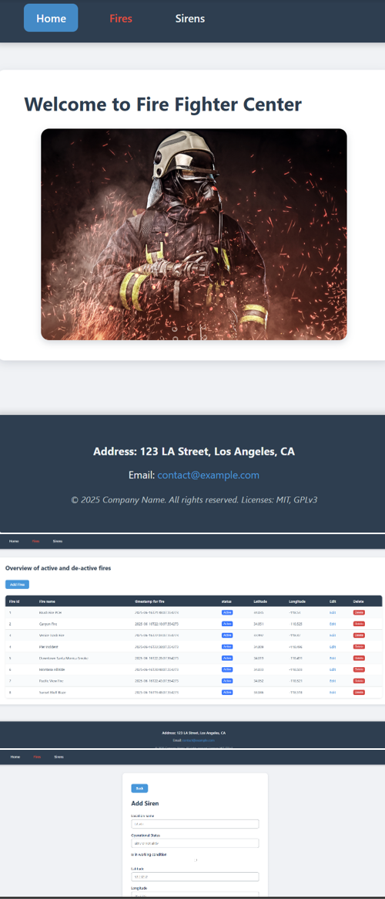

This project was a collaboration between me and 4 other students,
form my school. The project was made for a real customer, that wanted a promo website, where
he could showcase his expertises in python and R, and would like people to get in contact with him.
We divided the assignments up, so Oskar was Scrum master, Lucas was Product Owner(PO), The other lucas,
Kristoffer and me were programmers, designers and testers. The project is made with Spring boot, Hibernate
MySQL, JS, and with external api's for reCaptcha from Google, and for way to send emails to the stakeholder.
We also used Jira for project management, so we could have a nice scrum board, and easy burn down chart.
Please check my mates out:
https://github.com/lucasmodin
https://github.com/OSBJE
AlignPro
So this project was our 2 semester exam. We needed to build a web app,
that was a project management tool. So basically an overview of projects, subprojects, tasks and subtasks.
it was a collaboration between Oskar, Lucas and me, where we were all programming the app. The app was made
with java spring boot, mysql, thymeleaf(server-side rendering) and jdbc(before we learned hibernate). It was
a very great experience, and we made a really good-looking website, with some great features. Plus it worked perfectly
the collaboration.
Fire Figher App

This project is an exam I had, where I needed to make a fire figher full stack program.
The project has 2 models fire and sirens and when a fire is added it should make the sirens
go off automatically for the sirens in 10km distances. I did not reach the final goal of making it
automatically, but everything else works. I might go back for making the final solution!
WishList App
Here was a project, where we should begin to know spring boot.
It was made by Lucas, Oskar and me, all endpoints in the controller, and sessions is used to check
login credentials, where a mysql database holds the data. It is also made with jdbc, and here we
hadn't learned hibernate, so all database calls are made by a singleton connection class, and queries
are coded in java.